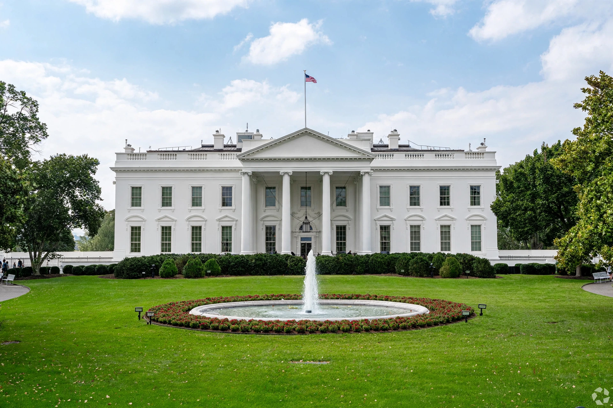

President of the United States
From Wikipedia, the free encyclopedia
The president of the United States (POTUS) is the head of state and head of government of the United States of America. The president directs the executive branch of the federal government and is the commander-in-chief of the United States Armed Forces. The office is established by Article II of the United States Constitution, which vests “the executive Power” in a president serving a four-year term, eligible (since the Twenty-second Amendment, 1951) for at most two elected terms.

The White House, official residence and workplace of the president.
The president is indirectly elected by the Electoral College (538 electors; 270 to win). Constitutional powers include signing or vetoing legislation, issuing executive orders, making treaties and appointments with Senate consent, granting pardons for federal offences, and delivering the State of the Union. The presidency's practical power has grown far beyond the founding design — through war-making, executive administration, party leadership and media centrality — producing the scholarly image of the “imperial presidency” (Arthur Schlesinger Jr., 1973) and continuing debates on executive overreach. The president must be a natural-born citizen, at least 35 years old, and 14 years a US resident. Succession is headed by the Vice President (25th Amendment; Presidential Succession Act). Donald Trump is the 47th and current president, having previously served as the 45th.
See also
See also
Head of state · United States Constitution · United States Electoral College · Vice President of the United States · Executive order